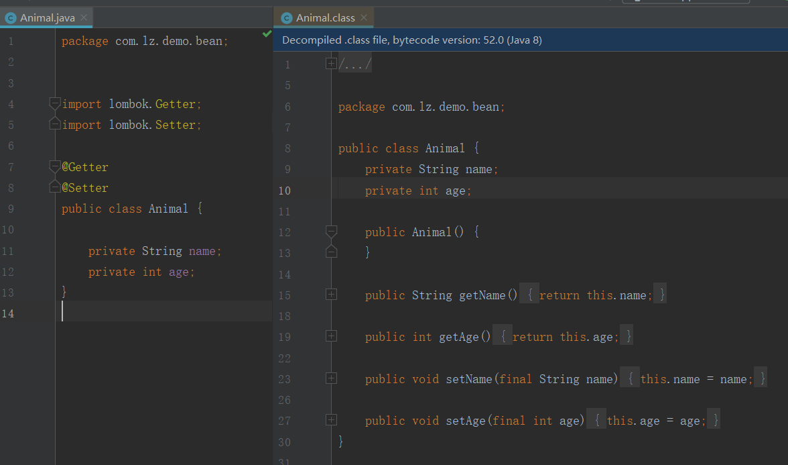
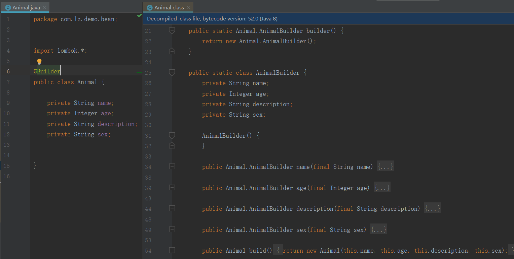

当我们创建一个javaBean的时候，往往会做一些重复性的事情，比如：getter和setter方法，toString方法，构造函数等等，如果只是有一两个类的话我们大可使用IDE来自动生成，但是如果类有很多的话我们不可能来手动生成，这样很浪费时间，并且会造成很多冗余的代码。而Lombok可以让我们使用注解，很轻松的完成这个事情。
在idea的Plugins中进行搜索Lombok进行安装
<dependency>
<groupId>org.projectlombok</groupId>
<artifactId>lombok</artifactId>
<optional>true</optional>
</dependency>在安装插件时，可以看到介绍上有很多注解
顾名思义，这两个注解就是用来生成getter和setter方法的。如图所示，左边是java代码，右边是编译之后的。可以看到编译之后有了getter和setter方法。而那个无参构造是因为类本身就会有个默认的无参构造。

@AllArgsConstructor可以用来生成全参的构造方法，它有3个属性，其中access可以用来修改访问修饰符
@NoArgsConstructor可以用来生成无参构造方法，它有4个属性，其中access可以用来修改访问修饰符
为每个需要特殊处理的字段生成构造方法，它对于所有被final修饰的且未初始化的字段有效，以及被@NonNull标记的未初始化的字段，都会生成一个构造方法。对于标有@NonNull还会生成一个显式的null检查。
如图：当变量上有@NonNull注解时，将会对带有@NonNull的未初始化变量生成构造方法。
同理对于未初始化的未初始化的 final 字段也是如此。如图所示，对于被final修饰的未初始化的name和age属性生成了构造参数，而对于初始化的description则没有生成。
注释在类上，可以生成该类的toString()方法，默认情况下按照顺序打印
具体用法参考官方文档
注释在类上，可以用来生成equals()方法和hashCode()方法
注释在类上，用于生成getter和setter方法，equals方法，canEqual方法，hashCode方法，toString方法
注解在类上，编译时会生成日志对象，在代码中可以直接使用log.info,log.debug等打印日志。

在类上使用@Builder可以使用下面的代码进行赋值，
Animal animal = Animal.builder()
.name("dog")
.age(10)
.description("狗吃骨头")
.sex("male")
.build();如：
运行后
至于更多的用法参考官方文档